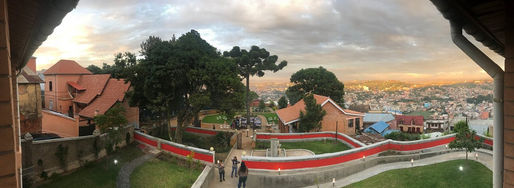
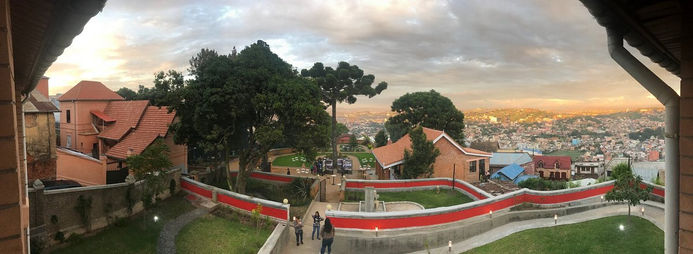

Best hotel
A mix of the charming, modern,and tried and true.

Relais des Plateaux & Spa– Ivato International Airport
Situated within 5 km from Ivato Airport, Relais des Plateaux features restaurant... tropical garden and 24-hour front desk. The restaurant serves excellent food to affordable prices in an upscale environment.

Maison Lovasoa
Situated within 5 km from Ivato Airport, Relais des Plateaux features restaurant tropical garden and 24-hour front desk... The restaurant serves excellent food to... affordable prices in an upscale environment.

Ibis Antananarivo Ankorondrano
Located in the heart of Ankorodrano’s business district, Hotel Ibis Antananarivo... Madagascar is 10 minutes' drive from Avenue de l'Indépendance. It offers a terrace... overlooking an outdoor swimming... The place was absolutely homely and perfect. Loved the ambience and the very courteous staff

Le Louvre Hotel & Spa
Offering an indoor pool and a spa and wellness centre, Le Louvre Hotel & Spa is located in Antananarivo. Free WiFi access is available. Everything was clean and the staff were amazing
Best restaurant
Can't-miss spots to dine , drink ,and feast.

La Varangue
This is by far the best restaurant you will find in Mada. It is expensive for people...
Restaurant Sakamanga
Delicious food. Good atmosphere. Situated in a safe area. The food served is fresh and quite tasty...

Les 3 metis
The restaurant has a large menu of mostly French inspired or French and European dishes...
Dite
Top notch food and service. Nice choices on the menu and the service was good...
Best place
Places to see, ways to wander, and signature experiences.
Analakely Market
Tana’s main marketplace is not a tourist attraction, but a bustling, chaotic ...

The Queen's Palace
The Queen's Palace is one of the few sights of antiquity. Good to see during the tour in...
Lemurs’ Park
At 5-hectare nature reserve Lemurs’ Park, you can observe nine species of lemur including...

The Croc Farm
Situated near the airport, Croc Farm is another popular botanical park. The main attraction is ...
To Do
Some other interesting things to do.
Analakely Market
Tana’s main marketplace is not a tourist attraction, but a bustling, chaotic destination full of local vendors selling everything from traditional fabrics to household items and souvenirs.

Ibis Hotel
Located in the heart of Ankorodrano’s business district, Hotel Ibis Antananarivo Madagascar is 10 minutes' drive from Avenue de l'Indépendance. It offers a terrace overlooking an outdoor swimming...

Hôtel Colbert - Spa & Casino
Offering a casino and a spa with indoor pool, Hotel Colbert is located in Antananarivo. Guests benefit from free access to the sauna, hammam and fitness centre.

Le Louvre
Located in the heart of Ankorodrano’s business district, Hotel Ibis Antananarivo Madagascar is 10 minutes' drive from Avenue de l'Indépendance. It offers a terrace overlooking an outdoor swimming